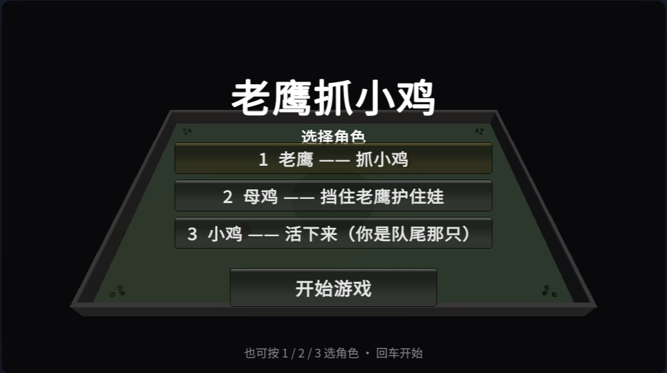
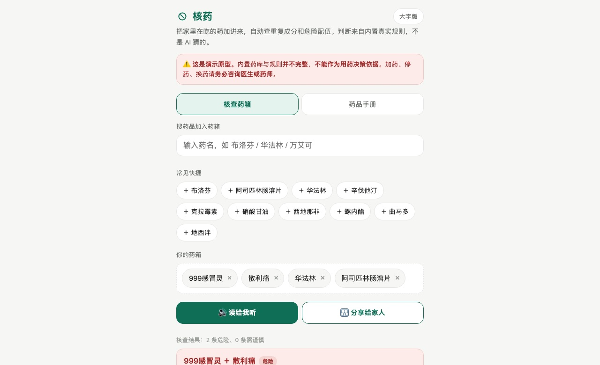
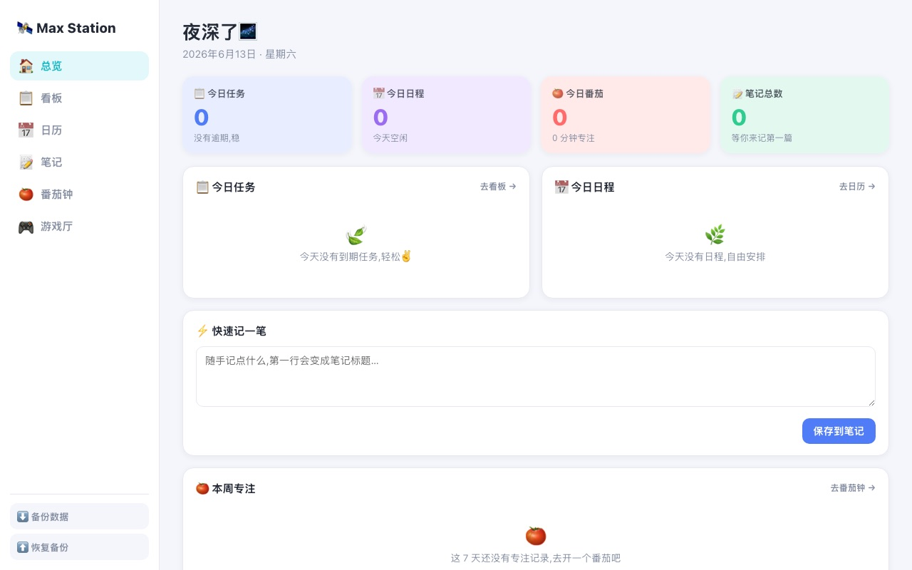
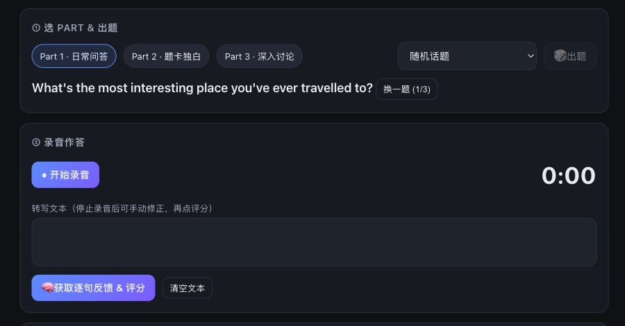
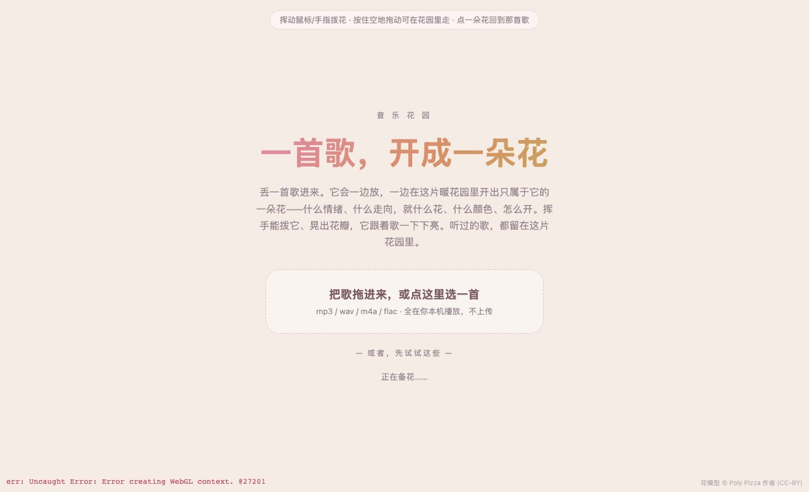
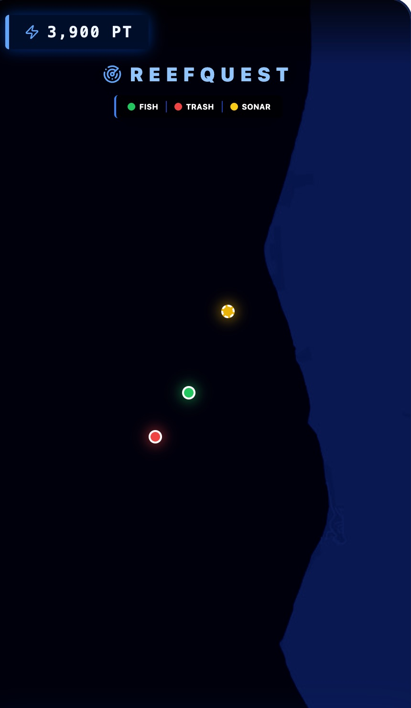
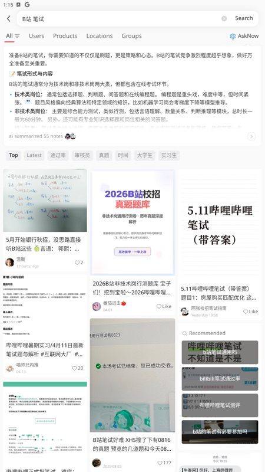
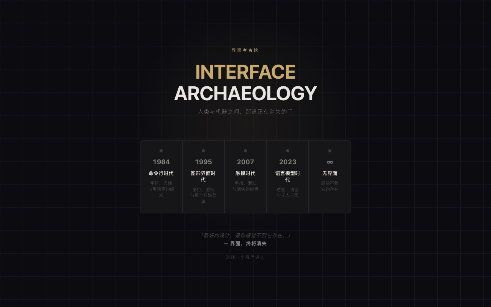
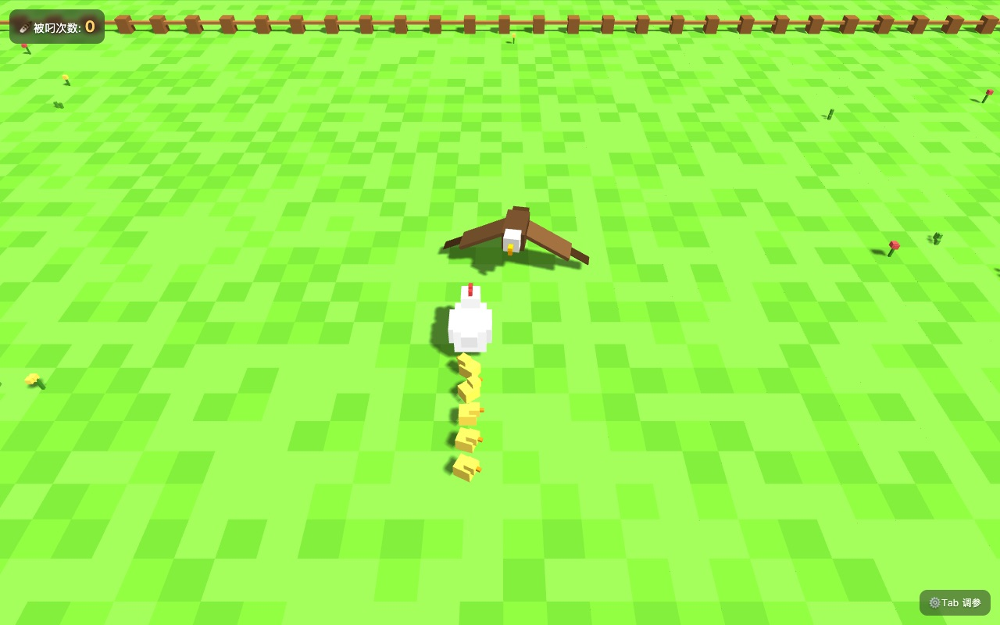
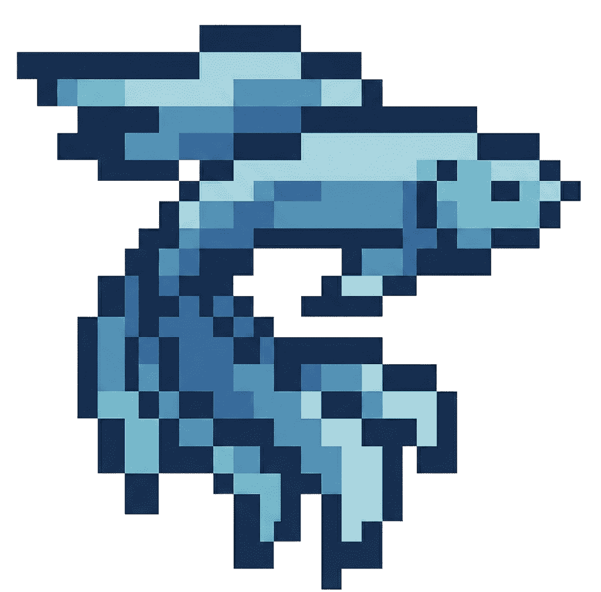

你的音乐博物馆
Museum of You
听歌是最高频的情感行为，但「我的音乐」永远只是一份冷列表。就做了这个：AI 读你这一年听过的歌、判出你的口味，自动布展成一座能第一人称走进去的 3D 私人博物馆——最爱的那首成了聚光下的镇馆之宝，每件展品配一句解说，换份歌单整座馆就换一种气质，6 种风格随你而变。为腾讯音乐的一场 AI 黑客松做的，建议电脑打开。
走进去 ↗诗云
Poetry Cloud
来自刘慈欣的同名小说，自己很喜欢，就把它做了出来：所有可能的五言绝句摊进一片星空，一共 10⁷⁰ 首；《静夜思》这样人类真正写过的诗就藏在里面，飞近了会亮起金光。
打开飞一圈 ↗↓ 还做了这些，大多能点开试

老鹰抓小鸡 · Unity
Chicken Chain · Unity
小时候的老鹰抓小鸡，用 Unity 重做了一个，专门调扑击和链条手感。键盘玩。
玩一把 ↗
核药
Med Interaction Check
家里的药能不能一起吃，红黄绿直接告诉你。~120 种常见药、73 条规则都是核过的，不让 AI 现编；有大字版。
查一下 ↗
Max Station
Personal Workbench
自己每天在用的工作台：看板、日历、笔记、番茄钟一页搞定，藏了几个小游戏。
打开看看 ↗
雅思口语教练
IELTS Speaking Coach
备考没人陪练，做了个 AI 考官：出题、录音作答、逐句反馈、估分，再示范一遍。
练一句 ↗
音乐花园
Music Garden
丢一首歌进去，它一边放、一边开出一朵只属于它的花；听过的歌都留在这片花园里。也是那场音乐黑客松做的。
种一首 ↗
ReefQuest
UQ HackAIthon 2026
UQ 48 小时 AI 黑客松：宝可梦式的海洋保护 app，潜水拍鱼攒积分、AI 识别溯源。原型。

小红书调研
XHS Research Skill
让 AI 自己在手机上翻几十条小红书笔记，一条条读，汇总成一篇调研报告。快档 5–10 分钟。
看它怎么翻 ↗
界面考古馆
Interface Archaeology
一座能逛的博物馆：从命令行到正在到来的「无界面」时代，看人机那道门怎么消失的。
进馆逛逛 ↗
老鹰抓小鸡 · 方块版
Voxel Chicken
同一个游戏的网页方块版，手机也能玩：你当母鸡，护着身后一串小鸡。
玩一把 ↗↓ 下面这些没有界面，是一直在自动跑的
多 Agent 系统 OPENCLAW
5 个 agent 各管一摊：求职、内容、财经、健康、运维，加上十来个定时任务，从早晨的市场预测到周末的反思报告，结果推到手机上。基于开源项目 OpenClaw 搭的。

每日预测 MIROFISH
给开源预测引擎 MiroFish 接了条每天自动跑的管线：凌晨把当天新闻跑成趋势预测，早上自动发出来，再用记分板回头对答案。
市场分析 DIGITAL ORACLE
跟着 B 站 Komako 的开源思路，看市场价格反推趋势：每天自动跑换汇分析，也让一个 agent 在 ASX 模拟炒股比赛里自动看盘下单（模拟盘，战绩中游）。